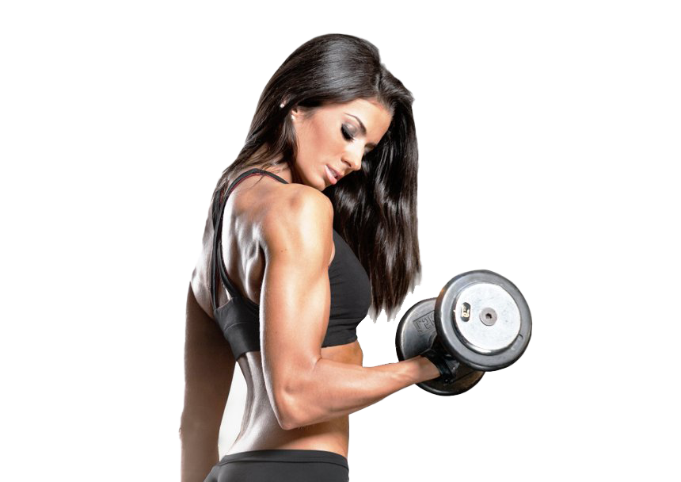

¿Que es una guia fitness?
La guia fitness es una seccion de estrucciones, A seguir para tener cuerpo y mente saludables
Para esto sere tu guia en este nuevo camino saludable que has elegido...
¿Que es el fitness?
Correr, levantar pesas, hacer abdominales y utilizar máquinas de ejercitación son algunas de las
acciones que suelen enmarcarse en el fitness. La noción también está relacionada con una cultura
deportiva que incluye competencias donde los participantes exhiben su forma física.
¿Cómo dividir los grupos musculares para entrenar tres días?
En una rutina clásica para novatos de entrenamiento de tres días por ejemplo, con un día de descanso
entre cada, esta puede ser una combinación ideal:
- Lunes: pecho, hombros y tríceps.
- Miércoles: espalda, bíceps y abdominales.
- Viernes: femoral o isquiotibiales, cuádriceps y gemelos.
¿Como dividir los grupos musculares para entrenar seis días?
Lunes: Cuádriceps/gemelos (Mujer) Pecho/abs (Hombre)
Martes: Biceps/Pecho (Mujer) Biceps/Triceps (Hombre)
Miércoles: Espalda/Triceps/Abs (Mujer) Cuádriceps/femoral (Hombre)
Jueves: Descanso
Viernes: Hombro/Abs (Mujer) Hombro/gemelos/abs (Hombre
Sábado: Glúteo/femoral (Mujer) Espalda (Hombre)
Domingo: Descanso


Press de Banca con barra
El grupo muscular que se trabaja es el pecho (pectorales), pero también trabaja los hombros y
los
tríceps. Este ejercicio lo elijo porque es el mejor que puedes realizar para activar el pecho.
realizado por Boeckh-Behrens & Buskies demuestra que el press de banca con barra produce el
mayor
nivel de activación del pecho frente a otros ejercicios como los cruces en polea, el press de
banca
con mancuernas, aperturas en máquina, aperturas con mancuernas o pullovers.
Ejerccios multiarticulares
Los ejercicios multiarticulares son aquellos con los que movemos varias articulaciones a la vez y
grupos musculares. Dependiendo del ejercicio unos músculos actuarán como primarios, los que
trabajan
más, y otros como secundarios o de asistencia, que se trabajan menos.
También me gustaría añadir que si lo que buscas es quemar grasa corporal a la vez que ganas
músculo,
los ejercicios compuestos o multiarticulares son la mejor forma de entrenamiento. Si te interesa
este tema, estos son algunos de los que considero imprescindibles en cualquier rutina:
Rutina de cuatro días
Empujar: este día trabajaremos pecho y tríceps. Opcionalmente gemelos.
- Press de banca con barra en banco plano: 3 series
- Press de banca con barra en banco inclinado: 3 series
- Fondos en paralelas inclinado: 3 series (colocando un peso si es posible)
- Press de banca con agarre semi-cerrado: 3 series
- Opcional: gemelos en prensa: 3 series
- Prensa sentada de tríceps: 3 series